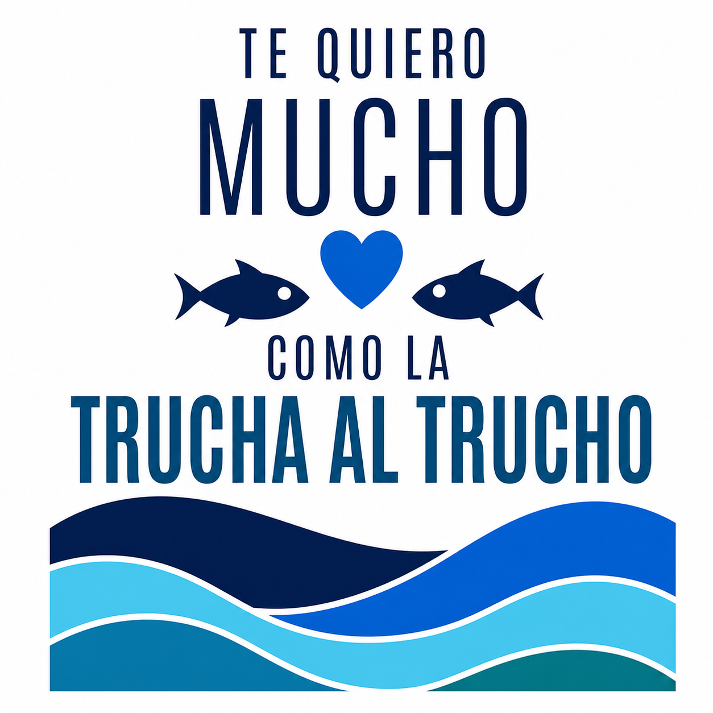

1 · ingest
Convierte el repositorio en unidades indexables.
- walker + .gitignore
- chunker por símbolo/bloque
- hash + mtime incremental

Convierte el repositorio en unidades indexables.
Genera representación semántica configurable.
Interfaz estable; backend por cerrar en ADR-0001.
Recuperación híbrida de contexto.
Primera superficie funcional para personas y agentes.
El núcleo de memoria sigue pendiente, pero la capa de acceso ya funciona: trucha hello valida la CLI y el servidor trucha-mcp publica trucha_hello y trucha_project_info. Joel y Gerard pueden importar el repositorio en Codex, Claude Code u OpenCode y comprobar la conexión desde el primer minuto.
Codex: codex mcp add project-trucha -- trucha-mcp
Claude: usa el archivo .mcp.json incluido.
OpenCode: usa opencode.json incluido.